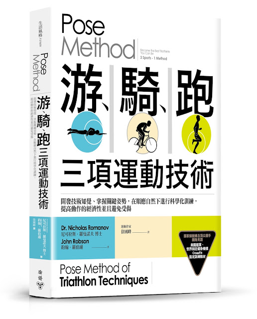
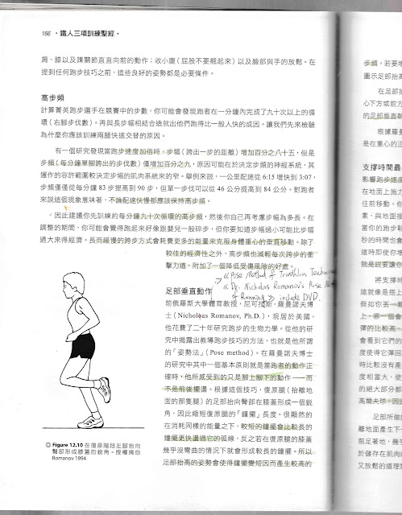
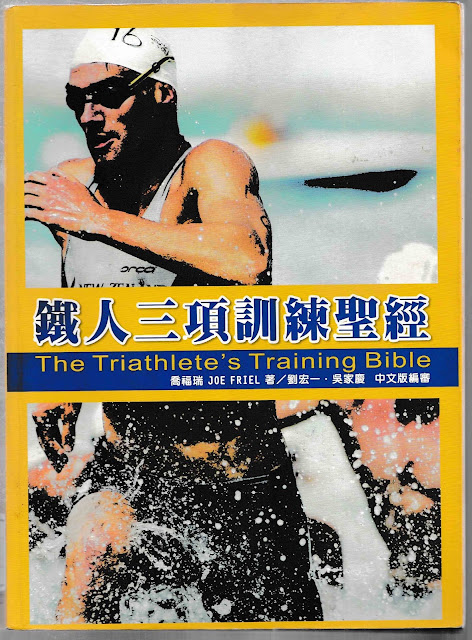

從喬福瑞到羅曼諾夫
這個月，終於可以看到心中念茲在茲快九年的一本中文書出版了。《Pose Method 游、騎、跑三項運動技術》是我從二〇〇九年讀到喬福瑞的《鐵人三項訓練聖經》後就想要翻譯的一本書 (這是我個人很奇怪的讀書癖好，只要讀到很喜歡的書就會有抄寫或翻譯的衝動，像每次讀金庸時都很想把它翻成英文)。


第二張附圖是二〇〇七年《鐵人三項訓練聖經》第一版中談及跑步技術的一頁，書中圖文所解釋的理論使我有豁然開朗的感覺。當時立即上網查了羅曼諾夫博士的名字，把他的著作抄下來，立即訂回來閱讀。(回頭翻看當時的筆記，還順道校正了第一版中拼錯的名字，多了一個"o"，這個錯誤在二〇一一年出版的第二版仍未訂正)

當時，單單只透過《鐵人三項訓練聖經》中的幾句話，很快就讓我的跑步成績提升了，下面摘錄第十二章〈技巧〉中影響我很深的一段話：
「前俄羅斯大學體育教授，尼可拉斯．羅曼諾夫博士（Nicholas Romanov, Ph.D.），現居於美國，他花費了二十年研究跑步的生物力學。從他的研究中揭露出教導跑步技巧的方法，也就是他所謂的 Pose Method。在羅曼諾夫博士的研究中其中一個基本原則就是當跑者的動作正確時，他所感受到的只是腳上腳下的動作──而不是前後擺盪。根據這個技巧，復原腿（抬離地面的那隻腿）的足部抬向臀部在膝蓋形成一個銳角，因此縮短復原腿的「鐘擺」長度。很顯然的在消耗同樣的能量之下，較短的鐘擺會比較長的鐘擺更快盪過它的弧線，反之若在復原腿的膝蓋幾乎沒彎曲的情況下就會形成較長的鐘擺。所以足部抬高的姿勢會使得鐘擺變短因而產生較高的步頻。若要增加跑步速度；足部必須抬高一點以保持固定的步頻或增加步頻。」
「在足部抬高之後，復原腿開始由膝蓋處張開以使得足部可以下降回到路面上，在身體重心下方或前方僅僅三到五公分處與地面接觸。從跑者的角度來看，所發生的事僅僅是復原腿的足部垂直朝臀部上拉然後再讓它直直地往下掉接觸到地面。」
「根據羅曼諾夫的研究，這個動作與擺動中的球原理是相類似的，其支撐點永遠都是在重心的正下方。這樣的動作非常經濟也能夠減少衝擊力道，因此降低了受傷的風險。」
以上出自喬福瑞：《鐵人三項訓練聖經》，台北：禾宏文化資訊，2007 年 6 月，頁 166-167。這是一本極好的著作，有助於瞭解耐力運動，博客來網路書店上有更詳細的介紹：https://goo.gl/FkPGVy
--
九年前，因為喬福瑞的幾段話，改變了我接下來這幾年的工作與生活重心。我記得很清楚，在喬福瑞的書上抄下網路查到的書名後，我立即想上網訂購，但當時還小沒有申辦信用卡所以跟舅舅借卡買了"Pose Method of Running" + DVD + "Pose Method of Triathlon Techniques"。
書款和運費，對當時的我來說是一大筆錢。拿到書之後，已經被徵召入伍，只能在勤務完成的睡前時光閱讀，當時總是讀到欲罷不能，「就像在讀武功祕笈」一樣興奮，常常在早點名前一兩個小時先起床練功，想把書中的「POSE / 姿勢/ 招式」練起來，雖然已經快九年前的事了，但現在想起來還歷歷在目。
除了發現新學問的欣喜之外，「為什麼這些知識沒有人知道？」是我當時最大的疑惑，也有一種很寂寞的心情，為什麼沒有人可以一起討論這本書……當時興起了分享的願望，我好想把這些知識翻譯出來，這種心情跟高中時讀金庸小說時很想翻譯成英文的心情是一樣的，當時這種心情也促成我之後去修外文系的課想要促成這個夢想。當然，我後來認清自己沒有翻譯金庸小說的實力，因為金庸小說裡我不懂的元素太多了……但我懂游、騎、跑這三項運動，就算不懂我也很想學！
強烈的願望加上出版社的協助，終於促成了我在二〇一一年完成 Pose Method of Running 這本書加上 DVD 教練影片的翻譯工作 (中文書名為《跑步，該怎麼跑？》)。我很想接著翻譯鐵人三項技術這本書：Pose Method of Triathlon Techniques，但總有許多不預期的新生命、新工作、新阻礙、新挫折與新的散漫和懶惰加入生活中，一直到二〇一五年底才開始動工翻譯，一開始翻譯又碰到重重難關，書中許多的哲學、科學和理論都超過我的知識範圍，許多文句都是反覆閱讀、查資料以及與作者確認之後才能夠定案。
因此翻譯的速度比自己預期的慢很多，最後也超過了出版社的截稿日期……直到二〇一七年底才完成譯稿，也即將在今年三月出版。
--
Pose Method of Triathlon Techniques"看似只談 Triathlon 這一項運動，但其實是各別在談游、騎、跑這三種運動的技術理論與訓練法，所以最終的中文書名才會特別指出這三項運動的名稱：《Pose Method 游、騎、跑三項運動技術》。不僅如此，作者又擴及到訓練的心理學、運動哲學(術語的定義)、運動力學、技術訓練理論與訓練法。
第一、第二部：談的是移動的概念和基本原則，也詳細說明了全書中最重要的概念之一「知覺」(perception)為何物。作者從一開始就先從力學與哲學的角度來解釋全書的關鍵概念。像是運動力學中的地面反作用力、爆發力、力矩、肌力……等，但幾乎沒有教科書去把這些細節給邏輯化的串接起來，也沒有談到上述力量的源頭--「重力」與其他力量之間的關係。這本書最大的貢獻正是補足了運動力學領域中遺失的概念，像是支撐(support)、體重(body weight)、失重(unweigh)與轉換支撐(change of support)，還有把運動力學中所有的概念進行邏輯性的組裝工作，這些工作的成果正是羅曼諾夫博士所創建的 Pose Method 這一套「教學理論」。如果你本身就對「理論」有興趣的話，必然會在第二部中獲得許多啟發。
第三部：談的是「教學法」的問題。作者強調必須先確立理論，再來談訓練法。然而，運動的教學理論不能像許多科學研究或形而上的哲學理論一樣只能「論」不能「做」(或不知該怎麼做)。除了理論之外，教學法(Method)也是全書的重點，所以作者特別在第三部中特別解釋動作「教學」的本質與架構為何必須立基在「姿勢」與「知覺」這兩個概念上面。如果你本身就在從事教育工作，對教學理論有興趣的話，建議你可以先讀第三部。
本書前面三部談完「技術」與「教學」的理論之後，接著再透過游泳、騎車與跑步這三種運動來檢驗 Pose Method 這套理論，也就是剖析「WHAT」的問題：該項技術的標準是什麼？接著才談論如何訓練技術，也就是「HOW」的問題。在談論訓練法時，作者很明確地指出了該如何運用 Pose Method 來進行這三項運動的技術訓練：該練什麼、動作的要領、訓練順序以及為何要練這些動作。最後再談這三項運動中常見的錯誤與矯正方式。
如果你是自行車愛好者，可以直接從〈第五部：踩踏技術〉開始讀起；如果你是游泳愛好者，可以直接從〈第六部：游泳技術〉開始讀起；如果你是一位跑者，則可以從本書的〈第四部：跑步技術〉開始研讀。但因為第四部中涉及較多力學的解說，理論的成份比較重，如果有先讀過作者的另外兩本著作《跑步，該怎麼跑？》(Pose Method of Running)與《羅曼諾夫博士的姿勢跑法》(The Running Revolution)的話會比較容易理解。但如果你已經讀過前兩本書，想要更深入了解「姿勢跑法」的力學理論基礎的話，本書的第十二到十七章有詳細的解說。
但說實話，這本書並不容易讀通，概念很多，又有許多違反一般訓練經驗的論點，使我在心理上大吃苦頭……翻譯時已重新理清頭緒，也試著轉譯出較為柔化的文句。為了幫助讀者對這本書的理解，我在本書一開頭寫了一篇導讀，希望對大家有幫助。
--
博客來網路書店上有更詳細的介紹：https://goo.gl/crXosq
--
作者尼可拉斯．羅曼諾夫博士本人也會來台灣與讀者見面，若想當面問作者問題，歡迎前來一起討論這本書中的知識。因為活動是免費入場，但空間有限，請先上網報名：https://goo.gl/kcMyRX
--新書分享會--
◎日期︰2018 年 3 月 9 日(五)
◎時間︰PM.19:00～21:00
◎地點︰森林跑站
◎地址：台北市大安區新生南路二段 60 號
◎報名：https://goo.gl/kcMyRX
◎臉書活動：https://goo.gl/9PHWoA
--Pose Method® Level 1 跑步教練認證課程--
◎日期︰2018 年 3 月 10 日(六) 與 3 月 11 日(日) 兩天
◎時間︰9:00～17:00
◎地點︰國立台灣師範大學公館校區，理學院大樓 E101
◎地址：11677 臺北市文山區汀州路四段 88 號
◎簡章：https://goo.gl/DRbEoo